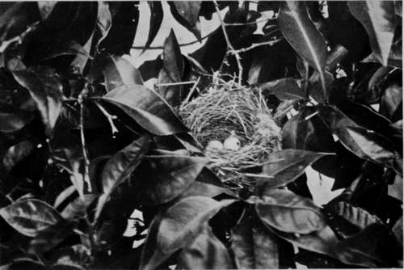
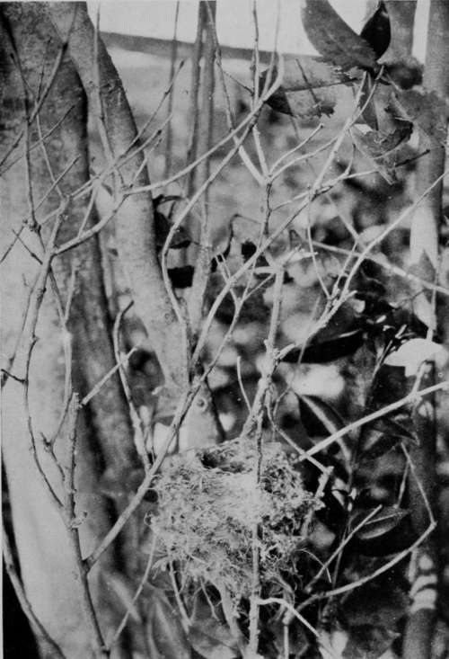

Birds'-Nesting In Spain. Part 10
Description
This section is from the book "Bird-Hunting Through Wild Europe", by R. B. Lodge. Also available from Amazon: Bird-Hunting Through Wild Europe.
Birds'-Nesting In Spain. Part 10
I tried here the automatic electric camera carefully hidden with cistus bushes on the top of a sand-dune, and baited with a rabbit. On the first attempt the rabbit was carried off bodily, the string which connected it with the camera being snapped without releasing the shutter. As no footprint showed in the smooth surface of the sand it was evident that some powerful bird had swooped down and carried it off without alighting. At the second attempt, after procuring another rabbit, the shutter duly went off, and by the tracks left in the sand it was plain that a Kite or Kites had been there. Unfortunately, the plate, from which I expected an interesting-photograph, was badly fogged from being left so long in the brilliant sun, only protected by the fabric of the focal-plane shutter.
Many Peregrines were flying about the forests, and were apparently resting or sitting in empty nests, for from one nest from which we disturbed a Peregrine we afterwards took four eggs of the Raven.
Kestrels also use the old nests of the Kite in which to lay their own eggs. Barn Owls and Jackdaws nest in the old cork-trees, while the quaint Little Owls use the Woodpeckers' holes in the same trees, and also the holes in the gnarled and twisted olive-trees.
Bee-eaters, Hoopoes, Rollers, and Golden Orioles also abound, and add to the interest of the scene by their brilliant plumage ; and a few Southern Grey Shrikes and many Woodchat Shrikes sit on the bushes and smaller trees on the watch for passing beetles. This Grey Shrike is not the northern form, Lanius excubitor, but Lanius meri-dionalis, which has the breast vinous coloured ; the former is not found anywhere in Spain.
Nest Of Orphean Warbler (Sylvia Orphea)
In the orange orchards nearer the river we found many Goldfinches' nests, and several nests of Wood-chat Shrike.
Another nest of the Woodchat, with six eggs, was in a tangled bush at the height of about seven feet from the ground. The only nest of Lanius meridionalis, the Southern Grey Shrike, was also in a very thick bush, but lower down, perhaps five feet from the ground.
In the orange-trees was a nest of the Orphean Warbler, while Great Tits, called by the Spanish boys Santa Cruz (Holy Cross), from the black throat and breast stripe forming a rude sort of cross, were very abundant, nesting in similar holes and crannies to those usually chosen by these birds at home.
Nightingales in Spain habitually nest much higher up than is usual in England. In a Jerez garden I saw two nests in bamboos some four feet from the ground. In the same garden was a nest of the Western form of the Olivaceous Warbler (Hy-polais opaca), containing four eggs. This was at a considerable height-quite ten feet-while the nest of a Blackcap was thirty feet up a tree. This looks as if these birds had been driven to nest in higher situations on account of some danger likely to be met with in more lowly sites. The abundance of large snakes and lizards, both with very carnivorous tastes, is no doubt a factor to be reckoned with by small birds in making their domestic arrangements. As these huge lizards think nothing of swallowing whole a half-grown rabbit (vide Chapman's Wild Spain), a brood of young birds would not be at all safe on or near the ground.
While we were in the desolate marismas, far removed from any of the luxuries of life, my friend fell ill. There was no doctor anywhere available, and I had to turn doctor for the occasion. As he was in great pain, with internal inflammation, hot flannels seemed to be desirable ; and failing anything else more suitable, a flannel shirt was wrung out of boiling water, and in this the patient was packed, while hot-water bottles were improvised out of wine-bottles wrapped up in a focusing-cloth. A day or two of this treatment proved very beneficial, but then the difficulty arose about feeding him. Luckily, our stores contained one tin of cocoa, and as we could get no meat, except by shooting for the pot, Benitez, the Spanish keeper, who acted as our factotum and handy man, was dispatched to shoot some Turtle Doves and Woodpigeons, and with these some capital strong soup was made. A few days later the patient was about again, though somewhat shaky on his legs.
Nest Of Western Olivaceous Warbler (Hypolais Opaca)
On these expeditions it does not pay to be ill. As long as one is well, the rough, open-air life and the constant occupation are most enjoyable; but during sickness it is a very different affair. I make a point of carrying a few remedies, but have very seldom had occasion to use them myself. Quinine, for example, is a necessity ; some arnica, or Elliman's embrocation, for strains or muscular fatigue, is also often wanted, and a few homoeopathic medicines take up little room and are decidedly useful-these and a bottle of chlorodyne are always included in my luggage wherever I go ; and last, but not least important, a tin of Keating's insect powder.
Luckily, I am not a persona grata with insect pests, and I can often sleep unmolested while my companions are horribly tormented. But when in doubt about sleeping-quarters I always make a point of using my sleeping-bag, without which no traveller is perfectly equipped. Mosquitoes, however, are not very discriminating ; and any stranger, be he dry or juicy, is bound to suffer more than a native. A mosquito-net is therefore a necessity, for a disturbed night, and especially a succession of disturbed nights, renders it impossible to be in fit condition for work during the day. In the southern countries of Europe mosquitoes as a rule only trouble one at night, and one can generally depend upon being unmolested during the day. There are exceptions, however. On the Danube Delta, for example, the mosquitoes are always hungry, and give one no peace by day or night. A green gauze bag, big enough to go over the hat and long enough to tuck under the coat collar, is a great defence for the face ; and this, with gloves for the hands, will give sufficient protection.
In these Spanish marismas you need no precautions against mosquitoes until April ; they then begin to be troublesome. During May the interior of a ckoza, or even the airy rooms of the ancient shooting-boxes of the old Spanish nobility, are veritable infernos, and without the protection of mosquito-curtains a stranger would be almost eaten alive. During the later summer months they must equal the winged hordes of the Dobrudscha region, where, to live at all, the people are obliged to have bonfires of dried reeds in the streets, which emit Stirling volumes of smoke, and in the towns it is almost impossible to see the light from the feeble street-lamps for the hosts of mosquitoes that circle around them.
One hears about the campaign against mosquitoes in tropical countries in the attempt to fight the yellow fever and similar tropical diseases, but to disinfect a district like the marismas of Southern Spain, or the impenetrable swamps and morasses of the Danube, seems to me to be an utterly impossible task, and beyond even the powers of science to effect.
Moorish Doorway, Alcazar, Seville
No visit to Andalusia is complete without a stop at Seville, and we spent a few days at this beautiful town, in order to see the old Moorish palace of Alcazar, and the Cathedral, a typical example of Spanish architecture.
Any attempt, however, at describing the beauties of Seville is beyond the scope of a book which only professes to deal with the birds of Wild Europe.
Continue to:
- prev: Birds'-Nesting In Spain. Part 9
- Table of Contents
- next: III. The Journey Out To Bosnia And Montenegro